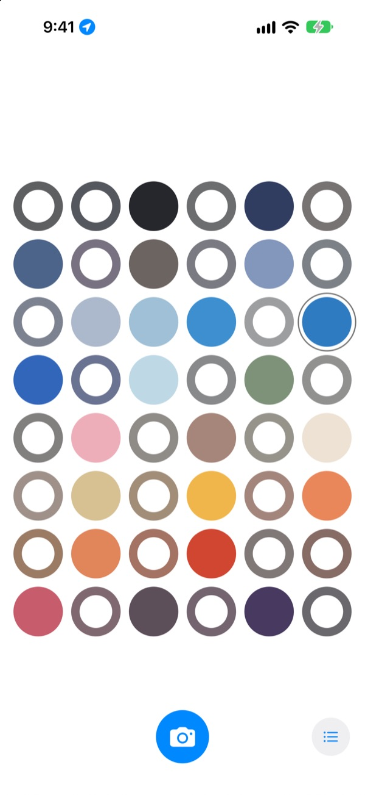
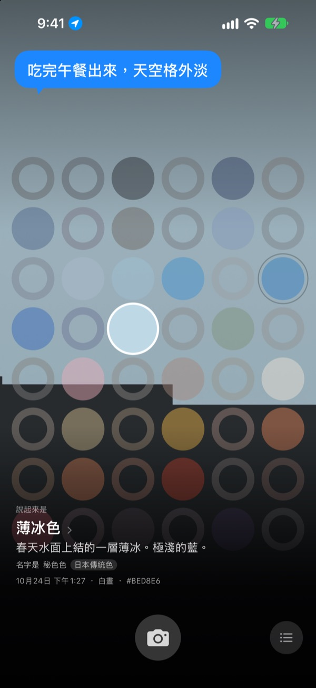
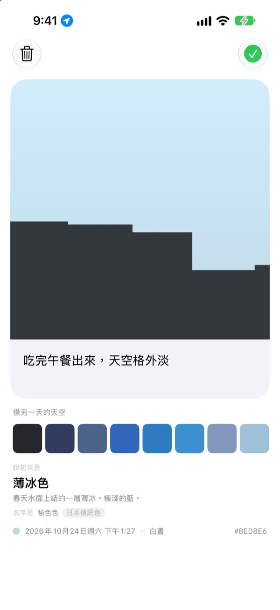
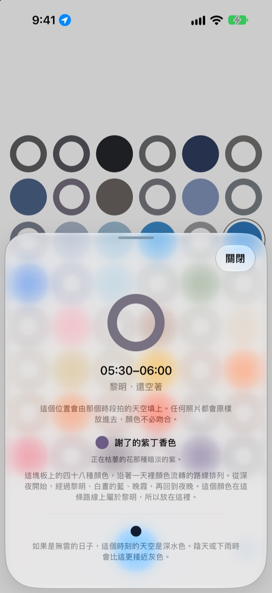
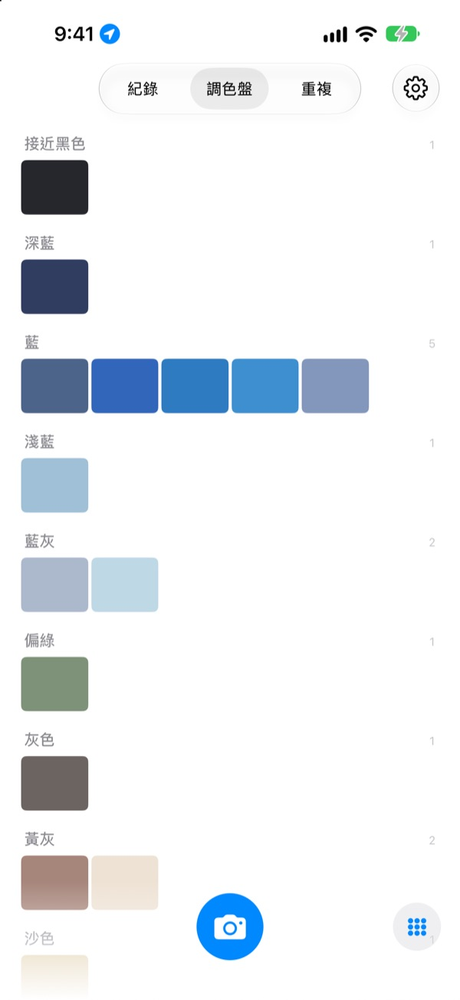

今天的天空
是什麼顏色？
拍一張天空，四十八格的格板裡，那個時刻的格子就會填上你拍下的顏色。它還會得到一個和這顏色相似的名字，像是薄冰色、泳池磁磚色、熟柿子色。
免費。不需要帳號，也不用登入。

親手點點這塊格板
點一下格子，就能看到它是一天中哪個時候的天空。放入一張天空照片，此刻的格子就會被填上；把日子往後翻，還能看到格板怎麼變化。
天天都看天空，卻記不起一種顏色
上班路上抬頭看見的天空，午餐後走出門時的天空，到了晚上就想不起是什麼顏色了。相簿裡留下的天空照片，也淹沒在其他照片之間。SkyDex 把天空照片收集成顏色，在一塊格板上呈現今天的天空走過的路。
每片天空都有名字
拍下的顏色會先得到一個能在腦海中浮現的名字，像是薄冰色、泳池磁磚色、熟柿子色；下方再附上一個出自韓國傳統色、日本傳統色、顏料或標準色的名字。
夠接近時寫「名字是」，差得遠時就老實寫「最接近的名字是」。

留下一句話
拍完，卡片會馬上打開。寫下望著那片天空時的念頭，之後在格板上點那一格，這句話就會重新浮現在天空之上。
也可以把另一天收集的天空顏色疊到這張照片的天空上，做成圖片分享。

空格為你指路
點一下空格，就能知道這一格是一天中的什麼時候、該去找什麼顏色。如果是無雲的日子，此刻的天空會是什麼顏色，也會依你所在地的日出日落時間告訴你。
顏色不必對上。陰天的灰，也是那一天的天空色。

紀錄、調色盤、重複
依時間順序瀏覽拍下的天空，把收集的顏色按藍、灰色、沙色等色系整理成調色盤。在另一天的同一時刻再拍一次，兩片天空就會並排在一起。
主畫面小工具讓你隨時看到今日格板和今日天空。

三個步驟就能開始
- 1
抬頭看天
按下格板下方的相機按鈕，讓天空填滿正方形再拍。
- 2
格子被填上
此刻的格子會填上你拍下的顏色，並得到一個名字。
- 3
留下一句話
在打開的卡片上，寫下看著那片天空時的想法。
格板這樣劃分一天
- 深夜 · 0點–5點
- 6 格
- 黎明 · 5點–8點
- 6 格
- 白晝 · 8點–16點
- 12 格
- 傍晚前 · 16點–18點
- 6 格
- 晚霞 · 18點–21點
- 12 格，每 15 分鐘一格
- 夜晚 · 21點–24點
- 6 格
天色變化快的晚霞時分，格子排得密；長時間幾乎不變的深夜，格子留得寬。最上面是深夜，越往下，一天就走得越遠。
常見問題
格子是怎麼填上的？
今天拍的天空，會填進拍攝時刻的那一格。就算顏色和預想的不同，也照樣放進去，因為那個時刻的天空確實就是那樣。以前收集的天空依顏色放入：和某一格的顏色夠接近，就填上那一格，而且一片天空只填一格。
昨天填滿的格子，今天空了。
格板只屬於今天。昨天的天空依時刻填上的格子，到了今天只按顏色重新比對。所以有的日子幾乎填滿，有的日子看起來空空的。照片並沒有消失：收集的天空全都在紀錄裡，依顏色排列則在調色盤裡。
填上的格子越來越淡。
這是刻意的設計。照片會保持原本的顏色一週，之後在八週裡慢慢變淡。它不會被刪除，也不會淡到完全看不見。在那個時段再拍一次天空，格子就會立刻恢復原色。沒有會中斷的連續紀錄，也沒有需要追回的數字。
顏色一定要對上嗎？
不用。沒有通過或失敗的判定。拍下的照片一定會儲存，陰天的灰也是那一天的天空色。
為什麼需要位置？
只用於在你點一下空格時，依你所在地的日出日落時間，告訴你無雲的日子此刻天空是什麼顏色。只使用精確到公里的大概位置，座標不會附在照片上。拒絕也能照常使用，這時以首爾為準。
相簿裡的天空也能放進來嗎？
可以。從「照片」App 裡選的天空，同樣會裁成正方形放入，並像剛拍的天空一樣填上此刻的格子。
要怎麼刪除照片？
打開照片點「刪除」，或在紀錄裡向左滑即可。裝置和 iCloud 中的照片會一起刪除。刪除 App 後，iCloud 裡的副本仍會保留，重新安裝就能找回收集的天空。
換手機後，收集的天空會怎樣？
收集的天空儲存在你自己的 iCloud 中，在登入同一個 Apple 帳號的新裝置上可以接著用。沒有帳號，也沒有伺服器，照片和顏色不會傳送給開發者。沒有廣告，也沒有追蹤。
真的免費嗎？
是的，所有功能都免費。喜歡的話，可以在 App 內給開發者一點小費，但小費不會解鎖任何功能。
支援哪些裝置？
支援 iOS 17.0 或以上版本的 iPhone，僅限直向畫面使用。
遇到問題、奇怪的狀況，或有什麼想說的，請寄信到 leeo@kakao.com。附上當時的情況和 iOS 版本，會更容易找到原因。